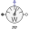

SMEE_GeneratorTest example: ElectricalExcitedSynchronousMachine as Generator |
|
Diagram
{kind=link}
Information
This information is part of the Modelica Standard Library maintained by the Modelica Association.
An electrically excited synchronous generator is connected to the grid and driven with constant speed. Since speed is slightly smaller than synchronous speed corresponding to mains frequency, rotor angle is very slowly increased. This allows to see several characteristics dependent on rotor angle.
Simulate for 30 seconds and plot (versus rotorDisplacementAngle.rotorDisplacementAngle):
- smee.tauElectrical
- currentQuasiRMSSensor.I
- electricalPowerSensor.P
- electricalPowerSensor.Q
- mechanicalPowerSensor.P
Default machine parameters are used.
Parameters (7)
| VNominal |
Value: 100 Type: Voltage (V) Description: Nominal RMS voltage per phase |
|---|---|
| fNominal |
Value: 50 Type: Frequency (Hz) Description: Nominal frequency |
| wActual |
Value: 1499 * 2 * Modelica.Constants.pi / 60 Type: AngularVelocity (rad/s) Description: Actual speed |
| Ie |
Value: 19 Type: Current (A) Description: Excitation current |
| Ie0 |
Value: 10 Type: Current (A) Description: Initial excitation current |
| gamma0 |
Value: 0 Type: Angle (rad) Description: Initial rotor displacement angle |
| smeeData |
Value: Type: SynchronousMachineData Description: Synchronous machine data |
Components (13)
| smee |
Type: SM_ElectricalExcited |
|
|---|---|---|
| rotorDisplacementAngle |
Type: RotorDisplacementAngle |
|
| groundExcitation |
Type: Ground |
|
| constantSpeed |
Type: ConstantSpeed |
|
|  | mechanicalPowerSensor |
Type: MechanicalPowerSensor |
| electricalPowerSensor |
Type: ElectricalPowerSensor |
|
| currentQuasiRMSSensor |
Type: CurrentQuasiRMSSensor |
|
| sineVoltage |
Type: SineVoltage |
|
| star |
Type: Star |
|
| ground |
Type: Ground |
|
| rampCurrent |
Type: RampCurrent |
|
| terminalBox |
Type: TerminalBox |
|
| smeeData |
Type: SynchronousMachineData Description: Synchronous machine data |